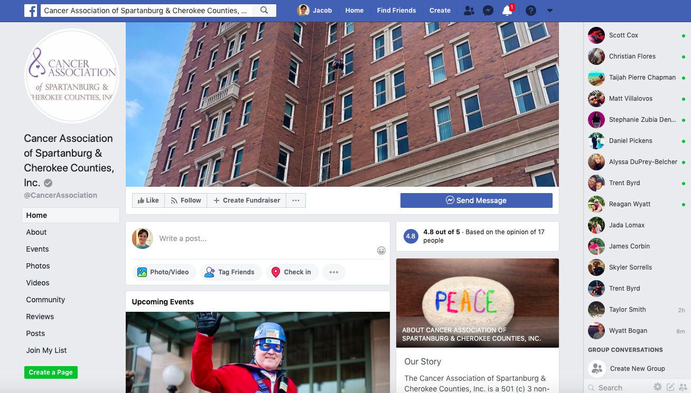

Primary Research
Screenshots of Non Profits Website and Marketing Collateral
The Cancer Association of Spartanburg is a non-profit organization in Spartanburg that provides services to patients suffering from cancer. The Cancer Association services include home care supplies, loans for hospital equipment, and assistance with medications. The Cancer Association is involved in many activies and events as well as presentations at clubs. Cancer Association throws free lessons like the smoking cessation class to help those from getting lung cancer. The Cancer Association is active on facebook, twitter, youtube channel, and website. Cancer Association fundraisers events in Spartanburg, the newest event being "OVER THE EDGE UPSTATE."

This event is sponsored by United Community Bank that is benefiting the Cancer Association. The goal is to raise over $1000 to rappel over the edge of a 10 story building for the Cancer Association. The event will be held Friday, October 18, 2019.
Cancer Association twitter page is not very useful because it doesn't provide any information about events; instead they post links to their facebook to get the information.
Most of all, the information is easily found on facebook with seems to be their most preferred way of communicating. The Cancer Association uses facebook for all of their means of marketing there service and showing upcoming events.
Glaydeane S. Lee
President: Jan Goldstein, GTI Chemical Solutions, Inc. - Administrative Director Ex Officio: R. Scott Heath, Wells Fargo Advisors - First Vice President-Investments Vice President: Kelly Bettencourt, Community Volunteer Secretary: Kay Hall, Retired Teacher Treasurer: Will Hoy, Regions Bank, Vice President Commercial Lending
Secondary Research
Screenshots of Secondary Research
The competitors are called The 'Children's Cancer partners' of the Carolinas. The website is very well organized and has a friendly design approach. The site even tells the stories of the kids who survive cancer, giving a hopefulness to the organizations brand. The message of the organization on the website is unmistakable compared to the Cancer Associations. Children's Cancer partners simply state that they are helping patents on a journey. Even though this is a small detail, it makes all the difference when knowing what services you are looking for. Although the design choice is mainly towards families with kids suffering from cancer. I think the use of imagery and short sentences makes the wedsite less overwhelming than the one you see on the website for Cancer Association.
Current data on cancer deaths show that breast cancers are accountable for approximately 50% of all deaths in the US. about 1.8 million people will be diagnosed with cancer in the United States making it the most common form of cancer. In Spartanburg, the overall cancer deaths have declined as you can see in the line graph below.
The difficulty with treating cancers is each patient will be treated accordingly to their specific disease. The new method helps the immune system identify in attacking tumors, a field known as immuno-oncology. BioNTech is developing therapeutic vaccines that are created for each cancer. The vaccines are given in the form of messenger RNA. RNA is a molecule that provides cells with instructions to create a particular protein. CRISPR/Cas9 has changed the field of gene editing by making it much simpler and faster to modify DNA sequences with high precision. The technology could also change the field of oncology, as it could be used to improve cancer therapies such as CAR-T which is not fully understood.
Even though Cancer Association of Spartanburg & Cherokee Counties is not in the business of finding cures to cancer. I think it is important for the organization to reconized these new studys and use them as a way to give their patients hope and to show how cerent they are in the metical work making them look prafessnal.Even though the Cancer Association of Spartanburg & Cherokee Counties is not in the business of finding cures to cancer. I think it is essential for the organization to recognize these new studies and use them as a way to give their patients hope and to show how current they are in the metical work making them look professional.